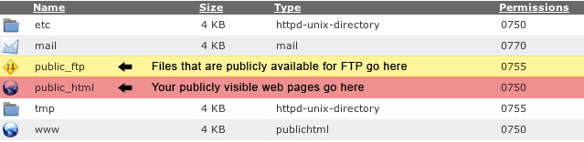

<cpanel setvar="dprefix=../">
<cpanel Branding="include(stdheader.html)">


 <style type="text/css">
<?cp Branding::spritelist(.spriteicon_img_mini {float:left;margin-right:5px;background: url\{leftparenthesis}"%"\{rightparenthesis};} %,@spriteurl,images::#icon-${img}_mini {background-position\{colon}0 -${cssposition}px;width\{colon}${width}px;height\{colon}${height}px; }:) imgtype=icon,subtype=img,method=scale_60percent ?>
</style>
<div class="body-content">

<h1><div class="spriteicon_img_mini" id="icon-getstart_mini"></div><cpanel langprint="gswtitle"></h1>

<cpanel include="jumpmenu.html">

<div class="h1Title"><cpanel langprint="gswintrotohosting"></div>

<h2><cpanel langprint="GSWHowSite"></h2>
<p><cpanel langprint="GSWFilesDesc"></p>

<div align="center"><p class="description"><cpanel langprint="GSWDirsCaption"> <cpanel print="$homedir">/.</div>
<br />
<p><cpanel langprint="GSWDirsMain"><br /><br />
<blockquote><b>" /> <cpanel print="$homedir">/</b> - <cpanel langprint="GSWDirsHome"><br />
<br />
<b><div class="spriteicon_img_mini" id="icon-ftpaccounts_mini"></div> <cpanel print="$homedir">/public_ftp/</b> - <cpanel langprint="GSWDirsFTP"><br />
<br />
<b> <cpanel print="$homedir">/public_html/ (www)</b> - <cpanel langprint="GSWDirsHTML">. (<cpanel print="$homedir">/www/ <cpanel langprint="GSWDirsHTML2"> <cpanel print="$homedir">/public_html/).</p>


<p><cpanel langprint="GSWDirIndex"><?cp HttpUtils::getdirindices([div style="padding: 3px; float:left;"]%[/div],index) || 'index.html' ?><div style="clear:left;">&nbsp;</div></p>
</blockquote>

<p><cpanel langprint="GSWDirCare"></p>


<div align="right"><form method="link" action="intro-a.html"><input type="submit" class="input-button" value="<cpanel langprint="NextStep">"></form>
</div>

</div>
<cpanel Branding="include(stdfooter.html)">
